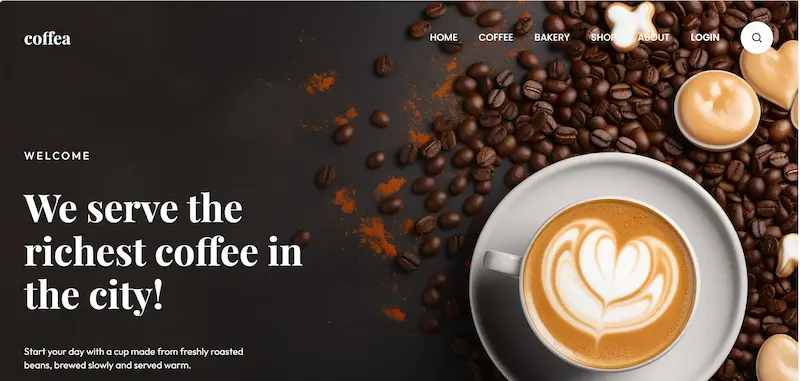
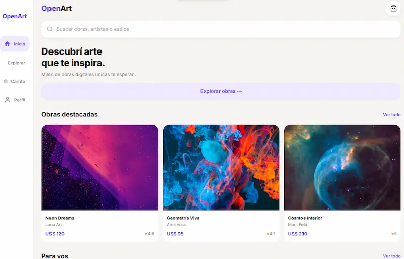

2026
Coffea
Landing page para una cafetería, diseñada en Figma y maquetada con HTML5 y CSS3, sin JavaScript.
Aprendizaje: pasar de un diseño en Figma a una maqueta fiel y responsive, trabajando por fases.
Ver caso de estudio →Diseño UX/UI y desarrollo front-end
Diseño interfaces claras en Figma y las llevo a código con HTML y CSS, para que se entiendan a la primera.
Trabajos de la materia, contados como casos de estudio: qué problema tenía, cómo lo resolví y qué aprendí.

2026
Landing page para una cafetería, diseñada en Figma y maquetada con HTML5 y CSS3, sin JavaScript.
Aprendizaje: pasar de un diseño en Figma a una maqueta fiel y responsive, trabajando por fases.
Ver caso de estudio →
2026
Diseño de tres flujos de tareas para una app de compra de arte digital y prototipo en Figma para testear con usuarios.
Aprendizaje: pensar los flujos de una compra, incluyendo qué pasa cuando algo falla.
2026
19 ejercicios que van de una estructura básica a una landing integradora, con Flexbox, Grid y variables CSS.
Aprendizaje: maquetar con HTML y CSS puro, sin frameworks.
Armo flujos de tareas, wireframes y prototipos, y los pruebo con personas para mejorarlos.
Defino paleta, tipografía y componentes para que todo se vea consistente.
Convierto los diseños en páginas responsive y accesibles.
Versiono mi código y publico mis sitios.
2026
UADER FCyT
2025 — Actualidad
UADER FCyT · Concepción del Uruguay
Soy Eliana, estudiante de la Licenciatura en Sistemas de Información. Me gusta que las cosas se entiendan rápido: diseñar una pantalla clara y después verla funcionando en el navegador. Estoy empezando mi camino en UX/UI y front-end, y busco mis primeras experiencias, de preferencia en modalidad remota.
Si algo no se entiende en pocos segundos, lo vuelvo a pensar.
Pongo mis prototipos frente a personas reales y ajusto con lo que veo.
Diseño pensando en quien va a usar la página, no en quien la hace.
Si tenés un proyecto, una pasantía o simplemente querés contarme una idea, escribime. Te respondo lo antes posible.
Escribime